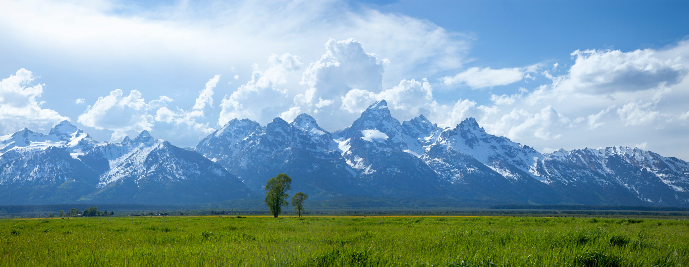

Discover Trips is the premier website to find your next vacation. Just answer this quick survey, and we will provide you with a comprehensive analysis of your preferred trip location. We will provide a list of recommended trip locations, along with a link to a trip itinerary, containing popular tourist attractions and activities to do based on the answers provided.
Our keys to finding the right vacation for you:
If the picture listed on this site caught your eye, here's a 2-day itinerary for the place shown in the photo:
Grand Teton Trip itinerary